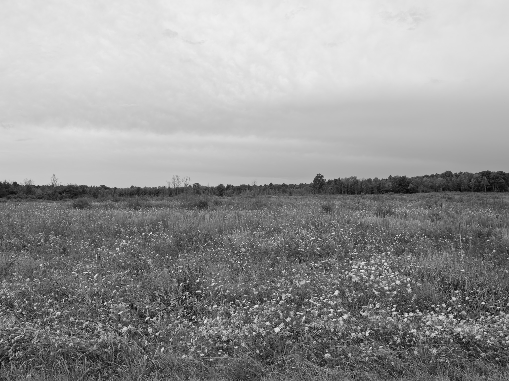
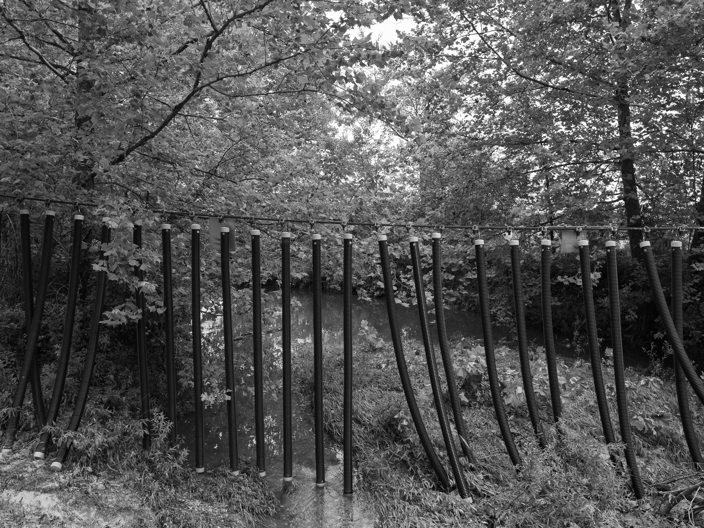
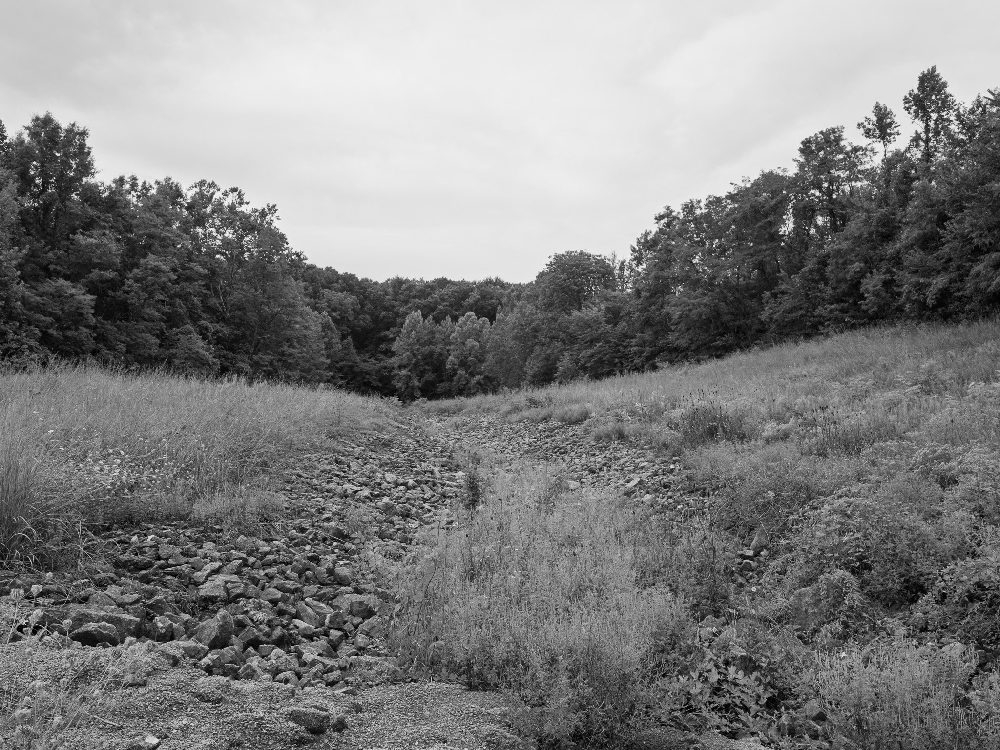
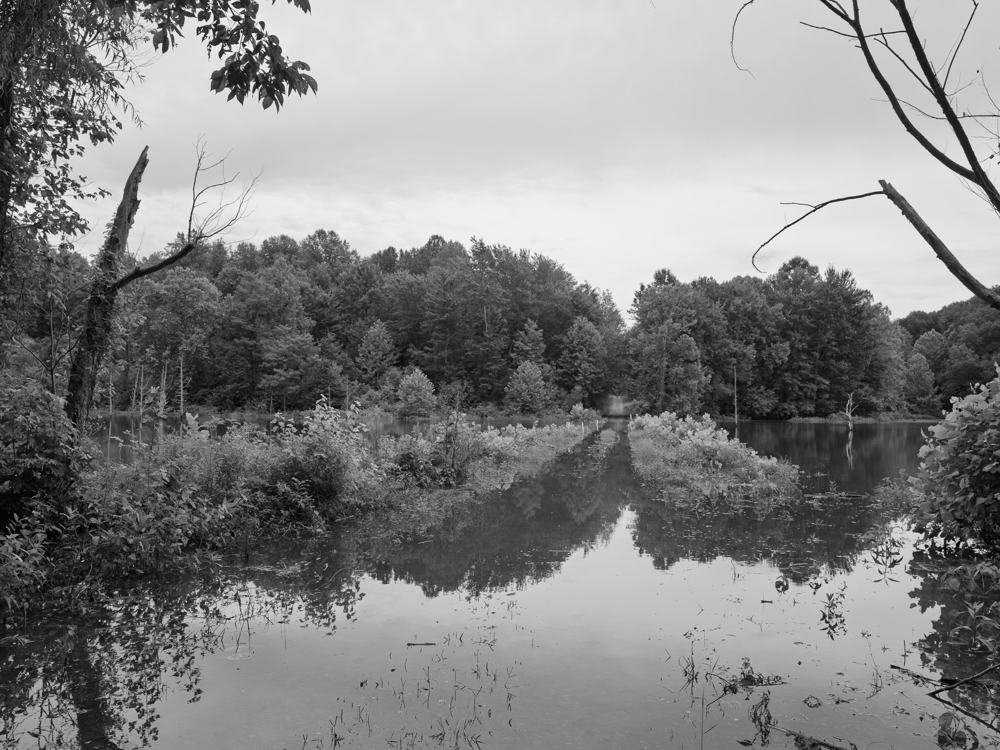
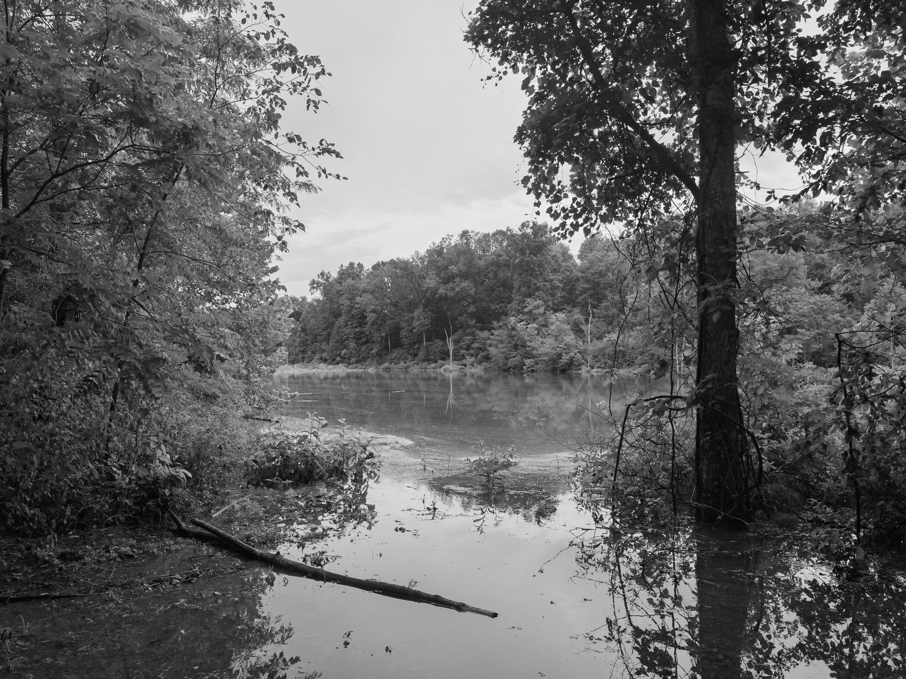
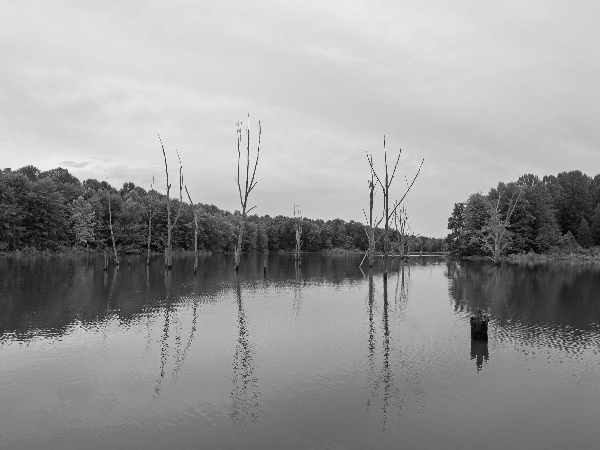
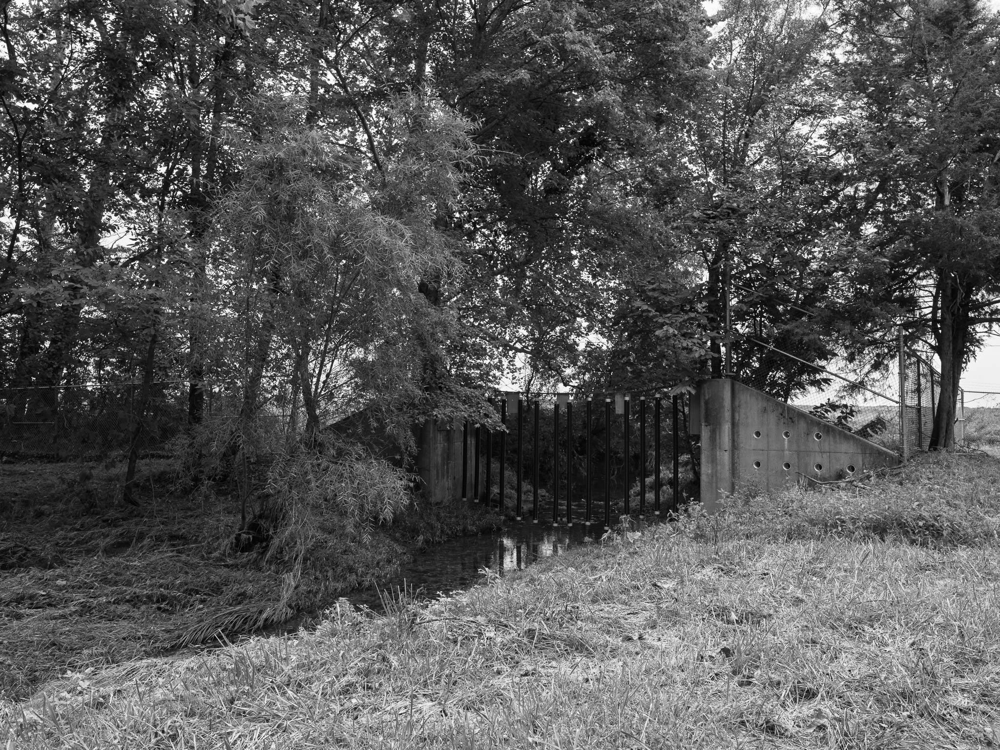

Public Lands Institute
Map
Images
Archive
About
Big Oaks National Wildlife Refuge
IN

Big Oaks National Wildlife Refuge 1 · 2026-08-14
_DSF4262.jpg

Big Oaks National Wildlife Refuge 2 · 2026-08-14
_DSF4273.jpg

Big Oaks National Wildlife Refuge 3 · 2026-08-14
_DSF4287.jpg

Big Oaks National Wildlife Refuge 4 · 2026-08-14
_DSF4288.jpg

Big Oaks National Wildlife Refuge 5 · 2026-08-14
_DSF4290.jpg

Big Oaks National Wildlife Refuge 6 · 2026-08-14
_DSF4301.jpg

Big Oaks National Wildlife Refuge 7 · 2026-08-14
_DSF4307.jpg
View all 7 images →
← General Butler State Resort Park
Versailles State Park →